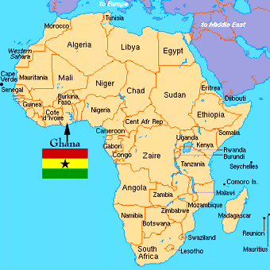
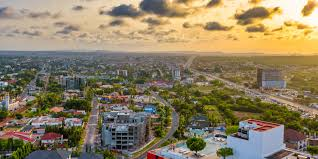
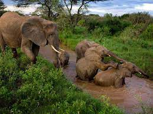
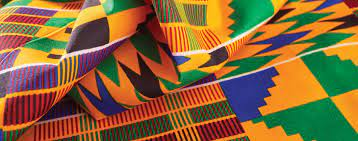
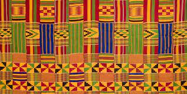

Fact 1
Ghana, situated on the Gulf of Guinea, boasts diverse landscapes and shares borders with Cote d'Ivoire, Burkina Faso, and Togo. The country's topography ranges from coastal plains to savannahs and forests.
Fact 2
The bustling capital city, Accra, is located along the Gulf of Guinea. Accra is not only a political and economic hub but also a cultural center with vibrant markets, museums, and historical sites.
Fact 3
In 1957, Ghana became the first African country to gain independence from colonial rule. Led by Kwame Nkrumah, the independence movement inspired other African nations in their quest for freedom.
Fact 4
English is the official language, reflecting Ghana's colonial past. However, the country is home to various ethnic groups, each with its own language and cultural traditions.
Fact 5
Ghana's biodiversity is showcased in national parks like Mole National Park, offering safaris to view elephants, antelopes, and a variety of bird species. The country is committed to conservation efforts.
Fact 6
The traditional Kente cloth, characterized by vibrant colors and intricate patterns, is a symbol of cultural identity. Woven by the Ashanti people, Kente is worn on special occasions and holds deep cultural significance.
 